実在のサイト
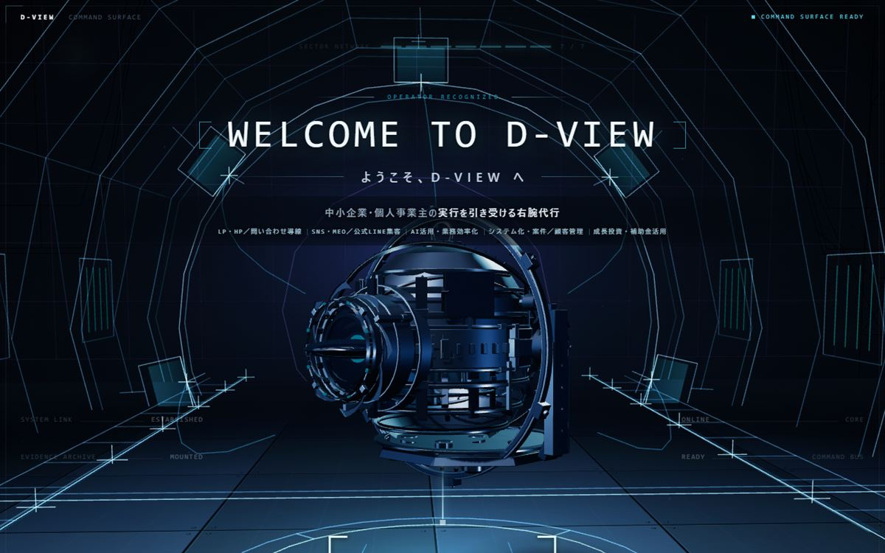
制作実績 ／ 公式サイト
D-VIEW
経営支援サービスの公式サイト。3Dで動く見せ方を含め、設計・デザイン・実装を担当しました。
TENKA LAB
「作品例」の欄はすべて架空のお店です。「制作実績」の欄は実在のサイトです。
WORKS
予約につながる LP・ホームページから、売上の管理シート、予約やチャットの仕組みまで。公式サイトを設計から実装まで手がけた実績と、13店舗の経理を統括してきた経験をもとに、お店の数字まで考えて仕上げます。AIで早く形にして、ご確認と手直しに時間をかけます。


RESULTS
下の作品例とは別に、実際に公開されているサイトです。

制作実績 ／ 公式サイト
経営支援サービスの公式サイト。3Dで動く見せ方を含め、設計・デザイン・実装を担当しました。
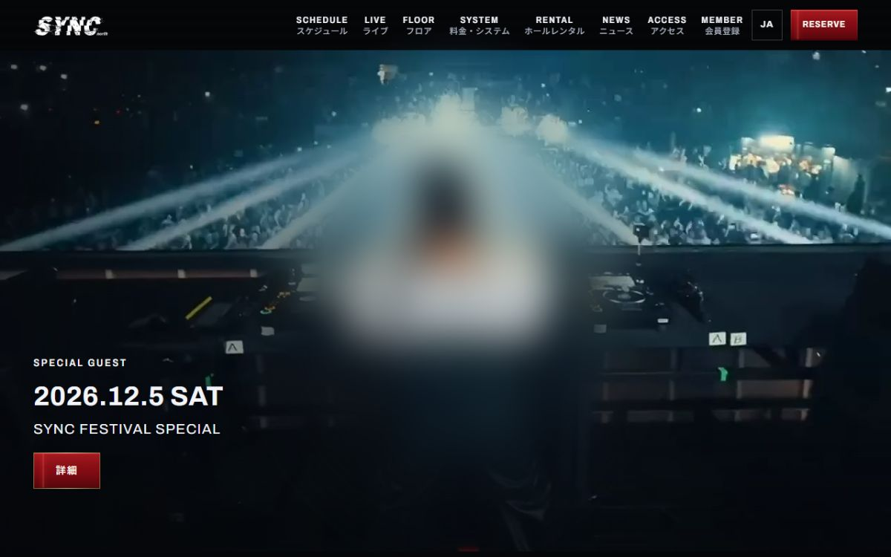
制作実績 ／ 公式サイト
札幌のナイトクラブ／ライブハウスの公式サイト。設計・デザイン・実装を担当しました。
SAMPLES
店名・人名・数字はすべて架空です。実在のお店・お客様の実績ではありません。
WEBSITE

01 ／ 予約LP
焼鳥店の接待・宴会の予約を、スマホでその場で受けるページ
接待や少人数の宴会の店をスマホで探す会社員が、個室・コースの総額・キャンセルの決まりを確かめて、夜でもその場でWeb予約できるようにする。

02 ／ ホームページ
初めての方の不安を減らし、予約につなげる美容室のホームページ
初めての街で「失敗しない美容室」を探す方が、料金・雰囲気・スタイリストを確かめて、不安なく予約に進めるようにする。
SYSTEM

03 ／ AIチャット（動くデモ）
営業時間外の質問に答え、予約まで案内するチャット窓口
営業時間外や電話しにくいときでも、料金・初回の不安・駐車場・空き状況にその場で答え、予約ページまで案内する。お店の電話対応を減らし、予約の取りこぼしを防ぐ。
予約は送信されません。外部のサービスにはつながず、ページの中だけで動きます。

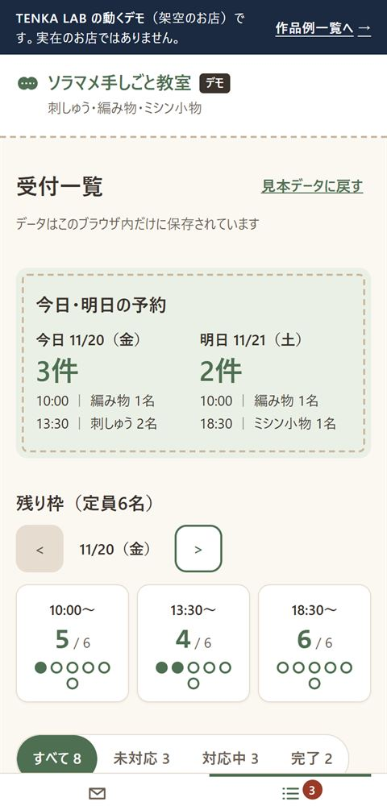
04 ／ 予約・問い合わせ管理（動くデモ）
電話・LINE・メールの予約を1つにまとめる、教室の受付管理
電話・LINE・メールに散らばりがちな予約と問い合わせを1つの画面にまとめ、「今日・明日の予約」と「残り枠」がスマホでひと目で分かるようにする。
デモを触ってみる（ソラマメ手しごと教室の予約・問い合わせ管理デモ）
入力内容は外部に送信されず、お使いのブラウザ内だけに保存されます。個人情報は入力しないでください。「見本データに戻す」で最初の状態に戻せます。


05 ／ 売上ダッシュボード（動くデモ）
売上管理シートの数字を、スマホでひと目で見られる画面に
忙しい店主・複数店舗の経営者が、今月の売上・目標の達成ペース・利益を、スマホを開いて数秒で分かるようにする。
デモを触ってみる（カフェ ユメツムの売上ダッシュボードのデモ）
数字はすべて架空です。作品例06の売上管理シートと同じ架空のお店です。
06 ／ 売上管理シート（Excel）
毎日入れるだけで、月の売上・利益・目標の達成が分かる管理シート
毎日の売上と経費を入れるだけで、月ごとの売上・利益・目標の達成具合が分かるようにし、店主が数字で判断できるようにする。
Excel ファイルをダウンロード（カフェ ユメツムの売上管理シート、xlsx 形式）
xlsx 形式・約72KB。Excel または Google スプレッドシートで開けます。


07 ／ 請求書の自動作成（動くデモ）
納品の明細から、取引先ごとの請求書をボタン1つで
小さなお店・個人事業の経理担当が、月末に取引先ごとに手で作っている請求書を、明細を確かめてボタンを押すだけで作れるようにする。インボイス（適格請求書）に必要な登録番号・税率ごとの合計と消費税額も紙面に載せる。
入力内容は保存も送信もされず、再読み込みで最初のデータに戻ります。請求書には「見本」の印が入ります。作品例05・06と同じ架空のお店です。


08 ／ 勤怠・出勤簿の自動集計（動くデモ）
3店舗・8人の打刻から、月の集計と出勤簿を自動で
複数のお店を持つ飲食店・小売店で、店長や経理担当が月末に手で数えている実働・残業・深夜の時間と出勤簿づくりを、打刻の記録から自動にする。打刻を直すときは理由と履歴が残るようにする。
デモを触ってみる（カフェ ユメツムの勤怠・出勤簿の自動集計デモ）
修正は保存も送信もされず、再読み込みで最初のデータに戻ります。残業・深夜の数え方はデモの仮定です。給与の金額は出しません。作品例05〜07と同じ架空のお店です。
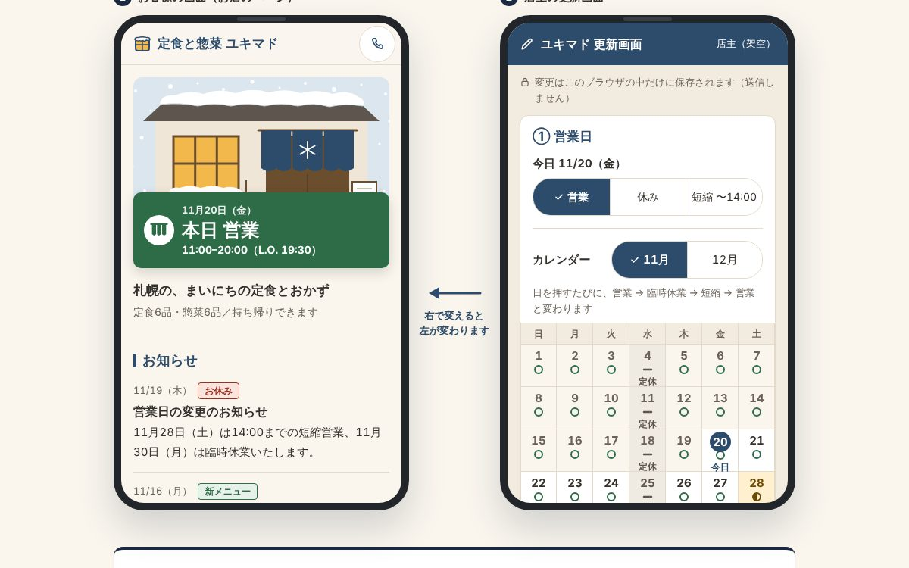

09 ／ お店のページ更新（動くデモ）
店主さんがスマホで、休み・売り切れ・お知らせを書き換えられるお店のページ
ホームページが無い、または作ったきりで更新できていない小さなお店に、「休み・売り切れ・お知らせ」を店主さんが自分で変えられる形を、触って確かめてもらう。
デモを触ってみる（定食と惣菜 ユキマドのお店のページ更新デモ）
変更はお使いのブラウザの中だけに保存され、どこにも送信されません。実際のお店のページの作り方はご相談のうえご提案します。


10 ／ CSVから伝票を一括作成（動くデモ）
システムから出したCSVを読み込むだけで、伝票番号ごとの出荷伝票がまとめてできあがる
CSVを見ながら伝票に手で写している事務作業を、「読み込んで印刷するだけ」にできることを、触って確かめてもらう。
デモを触ってみる（コハクノ食品のCSVから伝票を一括作成するデモ）
読み込んだCSVはお使いのブラウザの中だけで読み、どこにも送信も保存もしません。金額は税抜の参考です。実際のお仕事では、お手元のExcel（VBA）やGoogleスプレッドシート（GAS）で作ります。
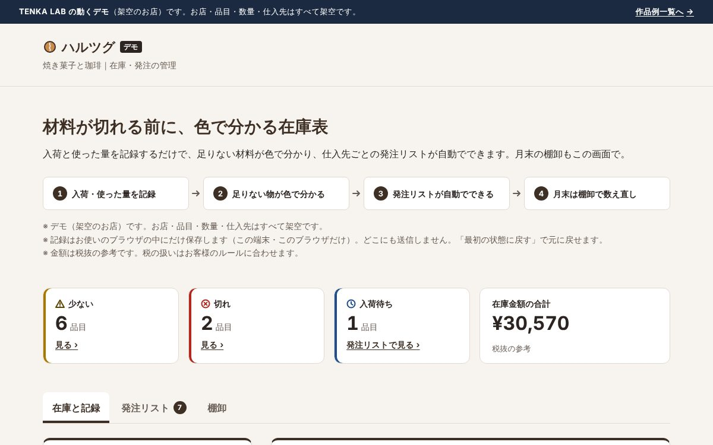

11 ／ 在庫・発注の管理（動くデモ）
入荷と使った量を記録するだけで、足りない材料が色で分かり、発注リストが自動でできる
「材料が切れてから気づく」「発注が店長の頭の中にしかない」を、記録するだけで見える形にできることを、触って確かめてもらう。
デモを触ってみる（焼き菓子と珈琲 ハルツグの在庫・発注の管理デモ）
記録はお使いのブラウザの中だけに保存され、どこにも送信されません。金額は税抜の参考です。実際のお仕事では、Googleスプレッドシート（GAS）やExcelで作ります。


12 ／ シフト表づくり（動くデモ）
スタッフの希望（○△×）から、シフトの下書きを自動で作る
「毎月のシフトづくりに店長が何時間もかかる」を、希望を集めてボタン1つで下書きまで進め、直すところだけ手で直す形にできることを、触って確かめてもらう。
デモを触ってみる（弁当と惣菜 ツグミヤのシフト表づくりデモ）
入力はお使いのブラウザの中だけに保存され、どこにも送信されません。時給・人件費は架空の参考値です。実際のお仕事では、Googleフォーム＋スプレッドシート（GAS）やExcelで作ります。


13 ／ 経費の記録と月の集計（動くデモ）
レシートをその場で入力すると、科目ごとの合計が自動で出る
「月末にレシートの束を整理するのが大変」を、その場で入力して月の合計と税理士さんに渡すCSVまで自動で出せる形にできることを、触って確かめてもらう。
デモを触ってみる（焼き菓子と喫茶 ミズハラ堂の経費の記録デモ）
入力はお使いのブラウザの中だけに保存され、どこにも送信されません。金額・支払先は架空です。会計・税務の判断はしません。実際のお仕事では、Googleフォーム＋スプレッドシート（GAS）やExcelで作ります。


14 ／ 予約注文の受付と仕込み表（動くデモ）
予約を入れると、受け取り日ごとの仕込み数が自動で出る
「12月の予約の紙の束から、作る数を数え直すのが大変」を、予約を入れるだけで仕込み数と当日の受け渡し表まで出せる形にできることを、触って確かめてもらう。
デモを触ってみる（洋菓子 トキワダの予約注文と仕込み表デモ）
入力はお使いのブラウザの中だけに保存され、どこにも送信されません。お店・商品・予約は架空で、お名前は仮名だけです。実際のお仕事では、Googleフォーム＋スプレッドシート（GAS）やExcelで作ります。

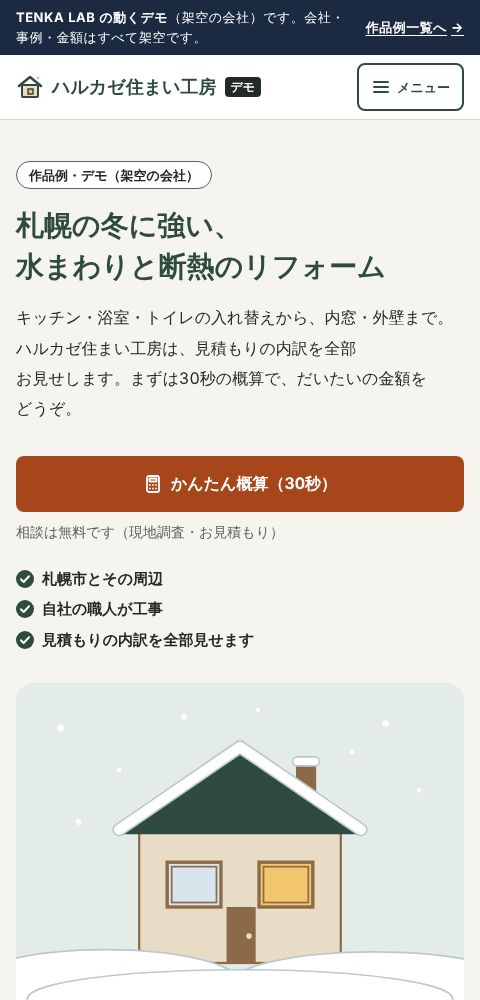
15 ／ 工務店のホームページと概算（動くデモ）
場所と広さを選ぶと、目安の金額と工期がその場で出る
「だいたいいくら？」がわからず問い合わせをためらうお客様に、30秒で目安を見せて、そのまま相談につなげる。ホームページを「見るだけ」から「問い合わせが増える」ものにする仕掛けの見本。
デモを触ってみる（ハルカゼ住まい工房のリフォーム概算シミュレーター）
入力はどこにも送信されません。会社・事例・金額はすべて架空です。実際のお仕事では、会社の単価表（Excel・スプレッドシート）から作り、相談はメール・LINEに届くようにします。
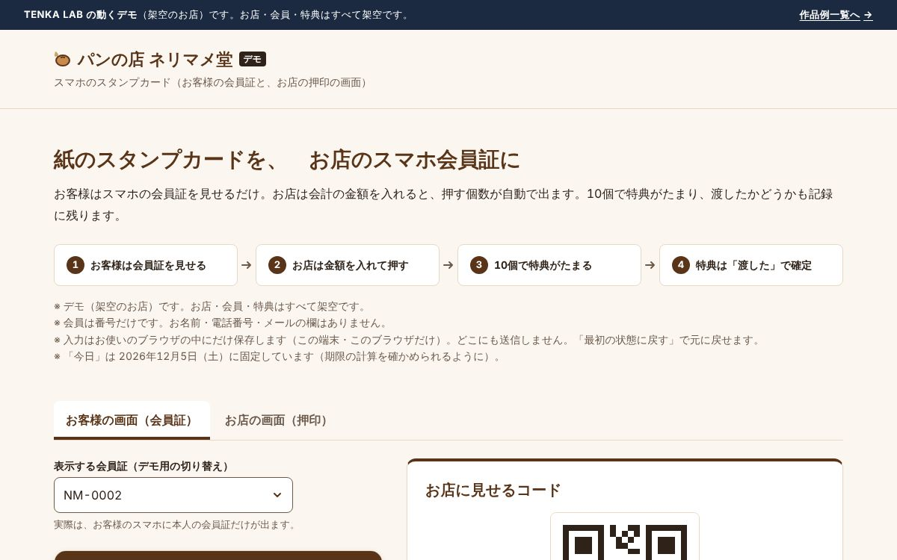
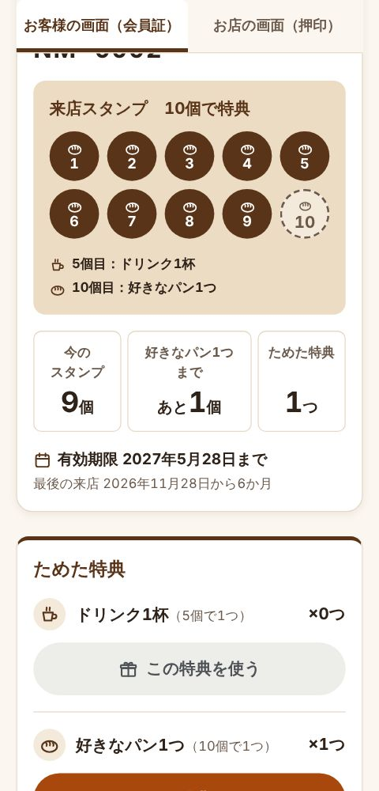
16 ／ スマホのスタンプカード（動くデモ）
お客様は会員証を見せるだけ。お店は金額を入れて押すだけ
紙のスタンプカードをなくす・忘れるお客様をなくし、再来店を増やす。有料のアプリを使わずに、お店だけの会員証を持つ仕掛けの見本。
デモを触ってみる（パンの店 ネリマメ堂のスマホのスタンプカード）
入力はお使いのブラウザの中だけに保存され、どこにも送信されません。お店・会員・特典はすべて架空です。実際のお仕事では、LINE やホームページから会員登録し、QR の読み取りとスプレッドシート・データベースへの保存につなぎます。

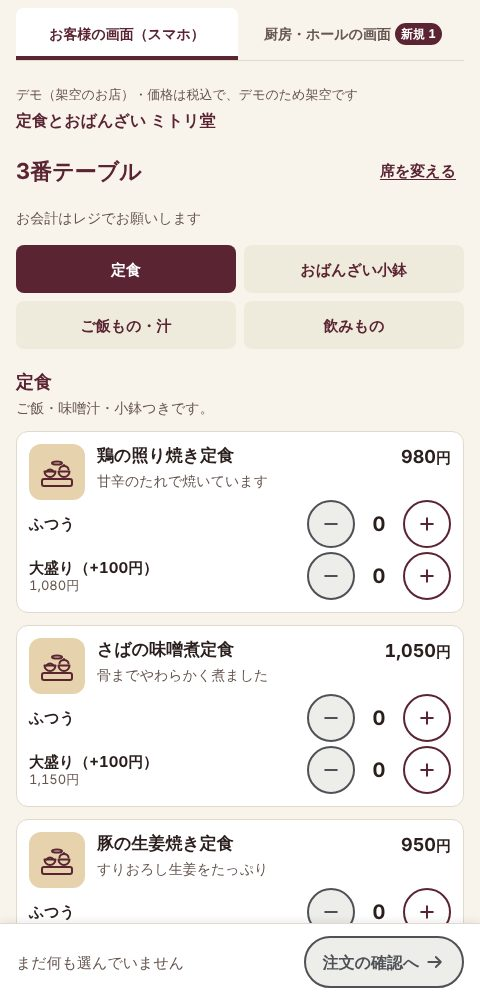
17 ／ テーブル注文（動くデモ）
お客様は席で選んで注文するだけ。厨房の一覧にそのまま届く
注文を取りに行く手間と聞き間違いを減らし、少ない人数でも店を回せるようにする。高い注文端末を入れずに、お客様のスマホで注文を受ける仕組みの見本。
デモを触ってみる（定食とおばんざい ミトリ堂のテーブル注文）
注文はお使いのブラウザの中だけに保存され、どこにも送信されません。お店・メニュー・価格はすべて架空です。お会計・お支払いはしません。実際のお仕事では、席の QR から注文画面を開き、データベースへの保存と厨房のタブレットにつなぎます。


18 ／ 診断つきのLP（動くデモ）
5つの質問に答えるだけ。合うコースが分かって、体験へ
「どのコースが合うか分からない」で申し込みをやめてしまうお客様を、診断で体験レッスンまで案内する。LP に「＋診断」を付けて反応を上げる見本。
デモを触ってみる（ピラティススタジオ ソラノネのコース診断つきのLP）
診断の答えはどこにも送信されません。お店・コース・料金・お客様の声はすべて架空です。実際のお仕事では、質問と点数をお店に合わせて作り、申し込みのフォームや LINE につなぎます。


19 ／ 教室の出欠と月謝の管理（動くデモ）
出欠はボタンで、振替の残りは自動で。月謝の未納がひと目で分かる
紙の名簿と月謝袋で管理している小さな教室の先生が、出欠・振替・月謝の未納をスマホひとつで確かめられるようにする見本。
デモを触ってみる（子ども書道教室 ハナツゲの出欠と月謝の管理）
記録はお使いのブラウザの中だけに保存され、どこにも送信されません。教室・生徒・金額はすべて架空です。お金の受け渡し・振込の確認はしません。実際のお仕事では、保護者の欠席連絡フォームや LINE、スプレッドシートへの保存につなぎます。


20 ／ 順番待ちの受付と呼び出し（動くデモ）
番号を取ると、前の人数と待ち時間の目安が出る。お店は席ごとに呼ぶだけ
予約なしで来るお客様が店先で並び、何分待ちか分からない理容室・飲食店・整体などで、番号の受付・呼び出し・待合の表示をひとつにまとめる見本。
デモを触ってみる（理容 トモリギの順番待ちの受付と呼び出し）
記録はお使いのブラウザの中だけに保存され、どこにも送信されません。お店・番号・待ち時間はすべて架空です。音・通知は出しません。実際のお仕事では、店先の QR コードで自分のスマホから番号を取る、順番が近づいたら LINE でお知らせ、混み具合をホームページに出す、などにつなぎます。
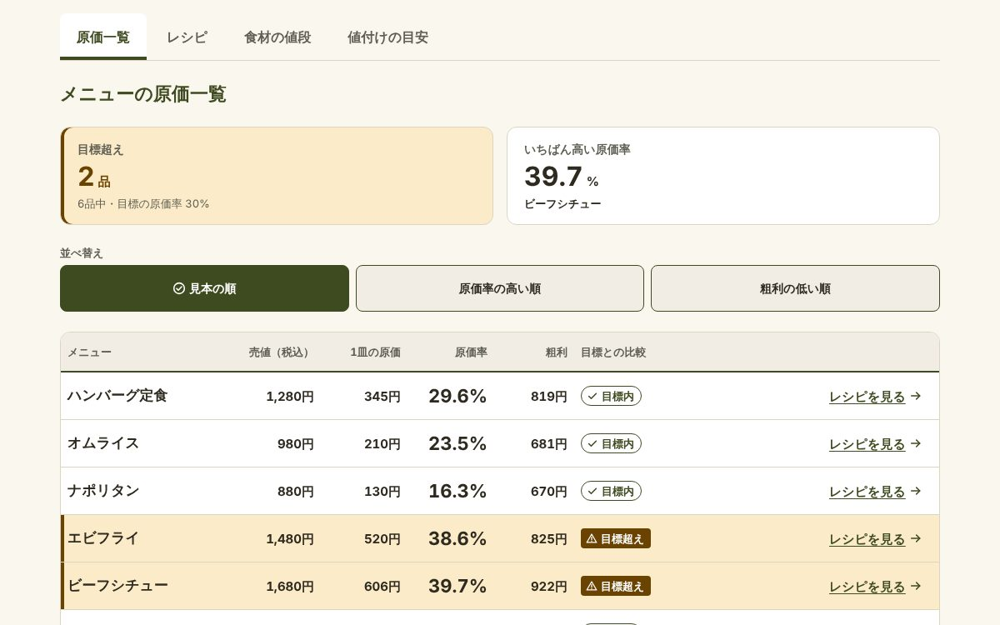

21 ／ メニューの原価計算と値付け（動くデモ）
仕入れ値を変えると、影響のあるメニューの原価率がすぐ変わる。値上げの目安も10円単位で
食材の値上がりが続くなか、「どのメニューがいくら損しているか」「値上げをいくらにすればよいか」を、勘ではなく数字で決められるようにする飲食店向けの見本。
デモを触ってみる（洋食 ミナトビのメニューの原価計算と値付け）
入れた値はお使いのブラウザの中だけに保存され、どこにも送信されません。お店・食材・値段はすべて架空です。消費税は10%だけで計算しています（デモの仮定）。実際のお仕事では、お店の Excel・スプレッドシートで同じ仕組みを作る、仕入れ先の請求書の CSV から値段を取り込む、などにつなぎます。


22 ／ 顧客カルテとお声がけ（動くデモ）
前回のカラーの番号とメモがすぐ出る。次の来店の目安を過ぎた方が一覧で分かる
紙のカルテを探す手間をなくし、「しばらく来ていないお客様」に気づけるようにする、個人の美容室・サロン向けの見本。
デモを触ってみる（美容室 ソヨギの顧客カルテと再来店のお声がけ）
入れた値はお使いのブラウザの中だけに保存され、どこにも送信されません。お店・お客様・記録はすべて架空です。お声がけの連絡（LINE・メールなど）はこのデモからは送りません。実際のお仕事では、お店の予約の仕組みやスプレッドシートとつなぐ、LINE 公式アカウントでお知らせを送る、などをご相談のうえ作ります。
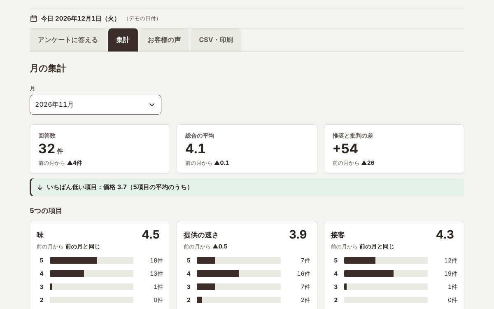
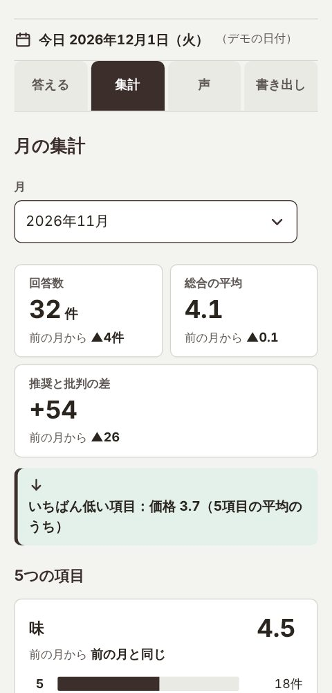
23 ／ お客様アンケートの集計（動くデモ）
答えた分だけ、項目ごとの平均と分布がすぐ出る。点数の低い声から読んで対応できる
紙やフォームで集めたアンケートを「集めたまま」にせず、毎月の点数の変化と、低い点数の声に気づけるようにする、喫茶店・飲食店向けの見本。
デモを触ってみる（喫茶 カサネドのお客様アンケートの集計と見える化）
入れた値はお使いのブラウザの中だけに保存され、どこにも送信されません。お店・回答はすべて架空です。実際のお仕事では、お店の Googleフォームやスプレッドシートの回答を読み込み、毎月の集計を自動で作る、などをご相談のうえ作ります。


24 ／ レジ締めと日報（動くデモ）
お札と硬貨の枚数を入れるだけで、合計とレジの記録との過不足がその場で出る。締めた分が月の日報になる
閉店後に紙と電卓で行うレジ締めを、数えた枚数を入れるだけにして、過不足の理由を毎日残せるようにする、飲食店・小売店向けの見本。複数店舗の経理を見てきた経験から、過不足と日報の書き漏れが起きにくい形にしました。
デモを触ってみる（おむすびと豚汁 ヒナタギのレジ締めの現金の数え表と日報）
入れた値はお使いのブラウザの中だけに保存され、どこにも送信されません。お店・数字はすべて架空です。レジ・POS とはつながっていません。実際のお仕事では、お店の今の締めの紙・レジの日報に項目を合わせ、スプレッドシートに日報を自動でためる、などをご相談のうえ作ります。


25 ／ 衛生管理の記録（動くデモ）
冷蔵庫・冷凍庫の温度と毎日の衛生のチェックをスマホで記録。基準を外れるとその場で知らせ、月の記録表を A4 横1枚に
飲食店で毎日つける「HACCP の考え方を取り入れた衛生管理」の紙のチェック表を、スマホの記録に置き換える見本。書き漏れに気づきやすく、月の記録をすぐ探して印刷できる形にしました。
入れた値はお使いのブラウザの中だけに保存され、どこにも送信されません。お店・記録はすべて架空です。温度センサーとはつながっていません。衛生管理の基準そのものは、お店の衛生管理計画と保健所の指導に従います。実際のお仕事では、お店の今のチェック表に項目を合わせ、スプレッドシートに毎日の記録をためる、などをご相談のうえ作ります。
CONTACT
店舗のLP・ホームページ、売上・経費の管理シートや業務システムのご相談は、このページをご覧になったサイトのメッセージ機能からお気軽にどうぞ。